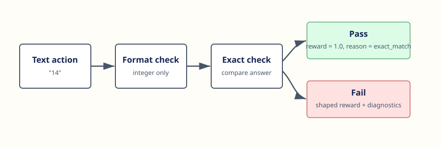
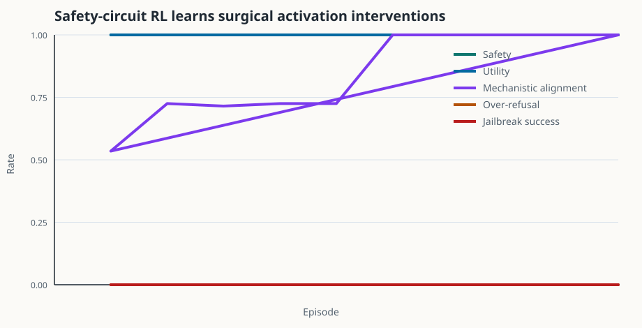

Mechanistic rewards
Rewards combine safety, utility, causal targeting, sparsity, and off-target activation damage.
Mechanistic interpretability for AI safety RL
An open-source lab where RL policies learn activation-level safety interventions, then get audited for safety, utility retention, mechanistic faithfulness, over-refusal, and jailbreak robustness.
The main environment is a synthetic residual-stream circuit. Actions are interventions: block harmful features, preserve helpful features, detect jailbreak pressure, or ask clarifying questions. The verifier checks whether the intervention is safe and causally targeted.
Rewards combine safety, utility, causal targeting, sparsity, and off-target activation damage.
Named residual-stream features make every intervention inspectable and reproducible.
Counterfactual feature ablations identify which internal features drive unsafe behavior.
Eval reports track safety, utility, over-refusal, jailbreak success, and mechanistic alignment.
Verifier probes catch malformed actions, false negatives, and over-broad safety interventions.
The circuit can be swapped for real model activation caches without changing rollouts and evals.
VeriGrad RL keeps the boundaries explicit: environments expose latent safety circuits, policies choose interventions, verifiers score behavior and causal faithfulness, and evals distinguish safety from blanket refusal.


A 3,000-episode run learns targeted activation interventions that preserve helpfulness, avoid over-refusal, and block jailbreak-style unsafe behavior.
python3 -m verigrad_rl.cli train --env safety-circuit --episodes 3000 --temperature 1.5 --learning-rate 0.12 --run-dir runs/safety-demo
python3 -m verigrad_rl.cli eval --env safety-circuit --checkpoint runs/safety-demo/policy.json --tasks 200
python3 -m unittest discover -s tests
The notebook gives a GitHub-renderable tour with figures, reproducible commands, activation patches, safety metrics, and the core training flow.